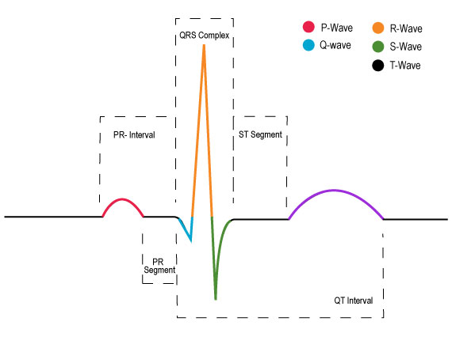

An EKG is a recording of the heart's electrical activity as that impulse moves from the atrium to the ventricles. These electrical impulses are what cause the heart to contract and pump blood throughout the body. These EKGs are interpreted by medical professionals to understand the following:
- Heart rate & regularity
- Timing & strength of the electrical signals
- Any possible abnormal conditions

You will need to learn how to interpret an EKG to determine if a rhythm is abnormal or sinus (normal). You can do so by analyzing these eight steps:
- Rhythm
- Rate
- P Wave
- PR Interval
- QRS Interval
- T Wave
- QT Interval
- ST Segment